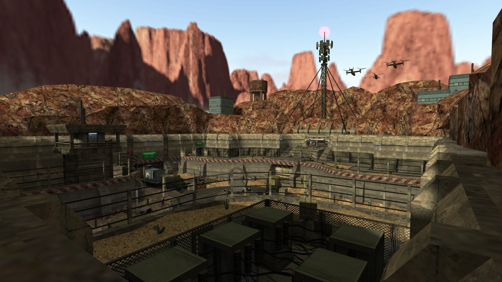
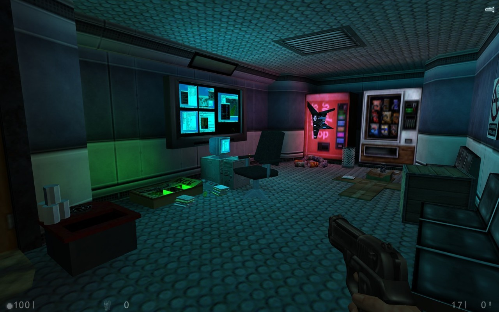
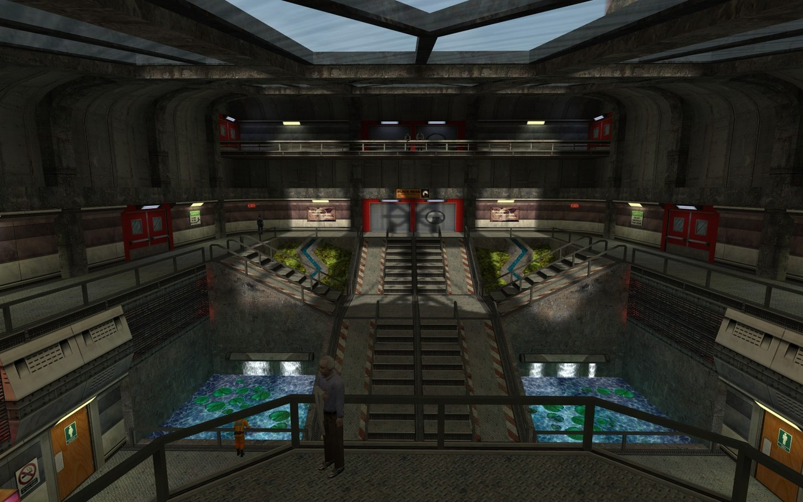
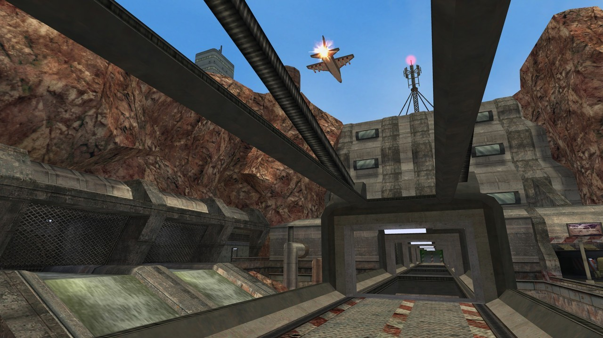
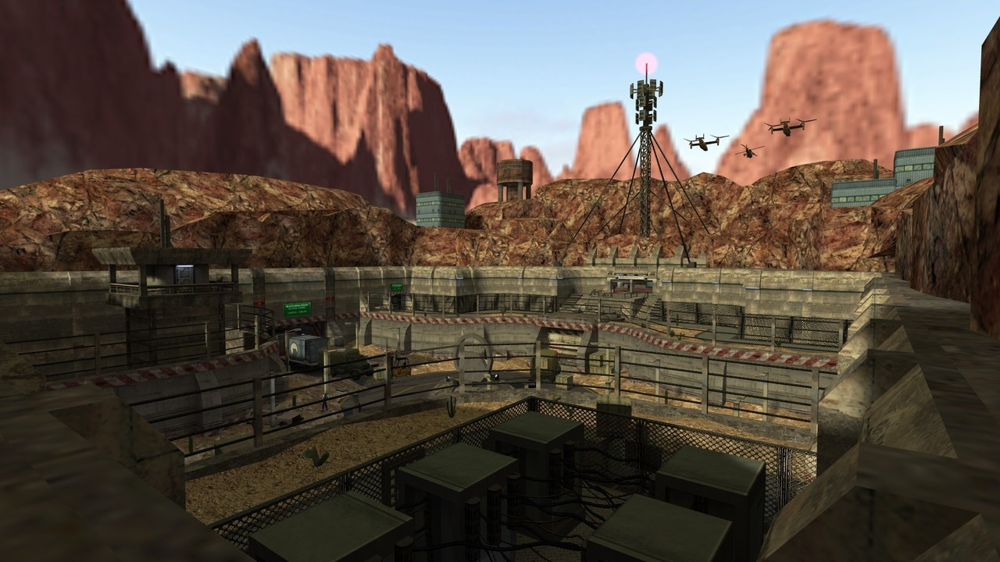
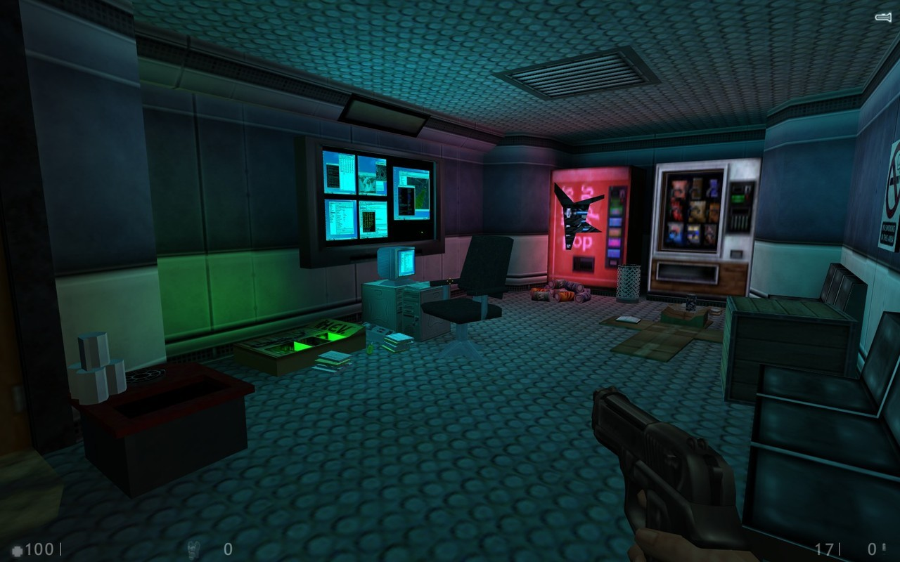
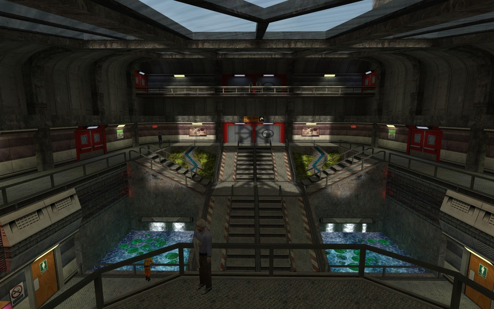
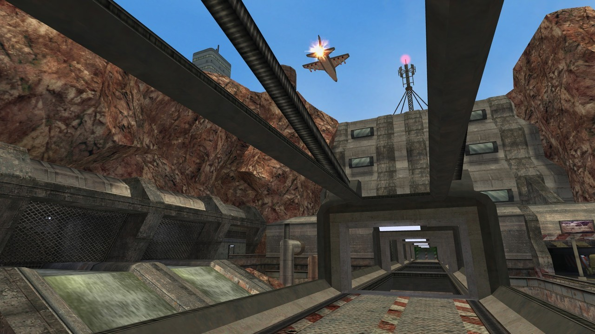

Half-Life : Echoes - An upcoming GoldSrc mod that allows you to re-live the Black Media Incident from a different perspective.
The creator has announced that the mod is currently in playtesting and will be released very soon.




Half-Life : Echoes - An upcoming GoldSrc mod that allows you to re-live the Black Media Incident from a different perspective.
The creator has announced that the mod is currently in playtesting and will be released very soon.
Just when you thought Half-Life speedruns couldn’t get more crazy…
Speedrunners from SourceRuns broke a new world record by completing Half-Life in just over 6 minutes using the recently discovered ‘save warping’ glitch.